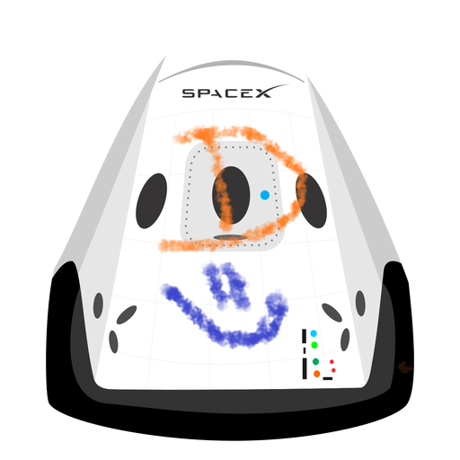

Hyperblog VOLVIMOS 2 es un blog del futuro
tu blog de cabecera dylan
Este es el titulo atractivo e interesante del post
y este es el párrafo de inicio donde vamos a explicar las cosas increíbles que se pueden hacer con ramas

los blogs son la mejor forma de compartir información y tus ideas. mucho mas que ir a conferencias o salir en youtube. Excepto si eres un rockstar .pero estetícamente no lo eres... por ahora.
suscribete y dale like